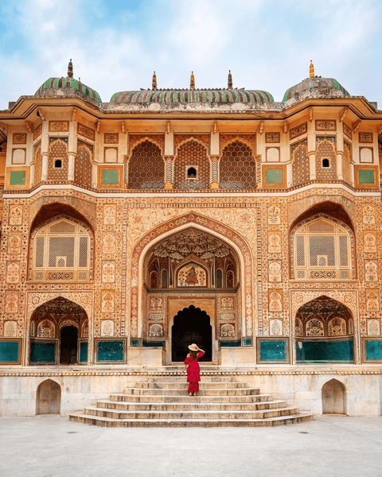
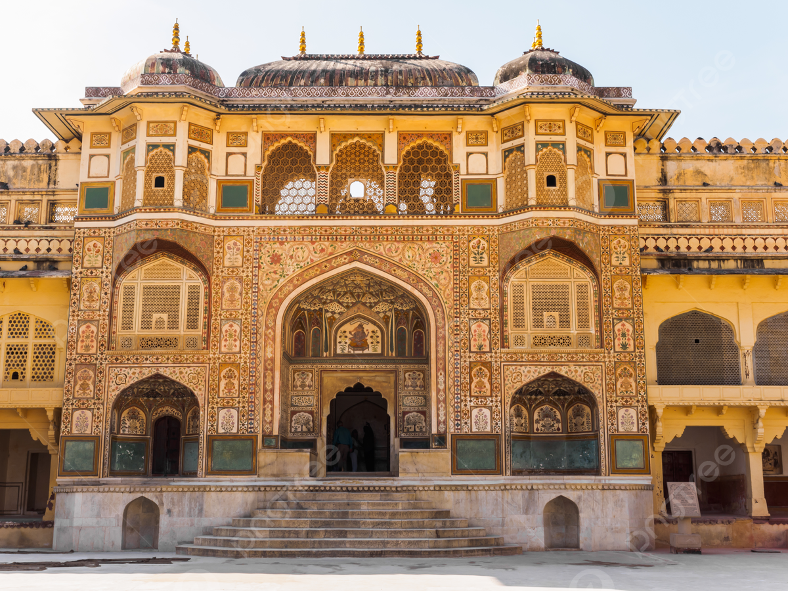

History of Amber Fort
Amber Fort was built in 1592 by Raja Man Singh I and later expanded by successive rulers. It is one of the most famous forts in Rajasthan and represents a perfect blend of Rajput and Mughal architecture.
Architecture & Design
The fort is constructed using red sandstone and white marble. It is known for its beautiful courtyards, grand gates, and the famous Sheesh Mahal (Mirror Palace), which reflects light beautifully across its walls.
Image Gallery



Travel Information
📍 Location: Jaipur, Rajasthan
🎟 Entry Fee: Approx ₹100
🕒 Best Time to Visit: October to March
📸 Famous Spot: Sheesh Mahal